The whole trick is a 5-second AI video playing behind a normal webpage. Three steps: one wide image, turn it into a 5-second video, and hand both to Claude Code. The clip cost me $2.31, and I loaded $20 of Higgsfield credit to start. Here are the exact prompts, the loop trick, and a bonus page for broken links.
By Kevin Magnan · @vibewithkevin
The live hero on kevinjmagnan.com, 4.6 seconds on a loop.
1. What you're building
This is the hero on my homepage. A giant hand flies three kites (Claude, Grok Bot, and Codex) over a hill, and a little orange robot waves up at them. The kites bob, the tails flutter, and the headline rises in after a beat.
Underneath, it's two layers. On top sits a normal HTML page with a headline and buttons. Behind it, a 4.6-second video plays on a loop. The video is the only AI part.
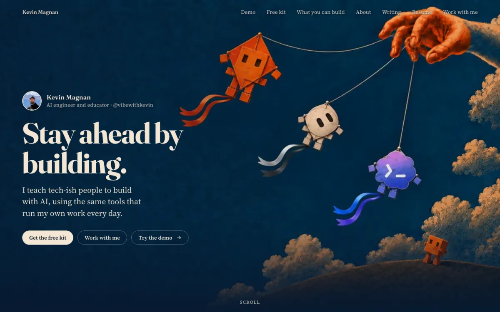
The stack
Image: Codex's built-in image tool. ChatGPT's image model works too. No per-image charge.
Video: Seedance 2.5 image-to-video through the Higgsfield API. $2.31 for a 5-second clip at 720p.
Build: Claude Code (Opus 5.5) for the page, the loop fix, the robot fix, compression, and the checks. ffmpeg, a free video tool, does the video work underneath.
Total paid spend for the hero and the 404 together: $4.62. Everything else ran on tools I already pay for.
Start with one wide image. Everything after this depends on it, so spend your rounds here.
The composition rule
Leave empty space where your headline goes. Every image prompt I ran carried this exact sentence:
The rule
Keep the left 40 percent of the frame as calm empty navy sky with no objects, so website headline text can sit there.
Your headline and buttons go on top of that space. Busy art behind text is hard to read, and moving art behind text is worse. Keep that side calm, and repeat the sentence in every edit round.
Who wrote the prompts
I didn't type the image prompts. I gave direction in Claude Code, and Claude Code wrote the prompts and ran Codex in the background (codex exec), 2 to 5 minutes per image. Only have ChatGPT? Paste the same prompts there, download the image, and skip the "Save to ./…" line. Here's what my direction actually looked like, typos and all:
Me in Claude Code · Sep 22, 4:12 PM
"I want a cool image like the claude robot controlled as a puppet to elicit the thinking of my controlling or managing AI. … help me expand my thinking here, waht are other images we could draw up to show off my design chops and show off the metaphor of controlling AI agents like a puppeteer controls the puppet"
Me · 5:07 PM
"Can you match the codex blue and the grokbot logo not the grok logo. Web search it"
Me · 5:36 and 5:37 PM
"One note about the image, the grok and codex icons are larger than the Claude one, make the other two smaller"
"In addition, maybe make the kite tails match the two other colors, right now they are the Claude colors"
React to drafts in plain words, and let the agent turn your reaction into a prompt. Rough is fine.
The rounds
About six rounds from four concepts to the final frame. Here's what changed each time:
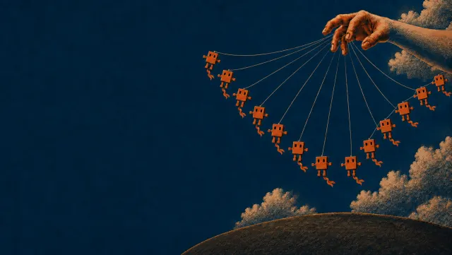
AKite swarm. Claude said it looked like a baby mobile.
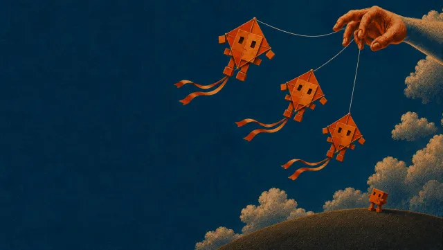
BThree kites. The one I picked.
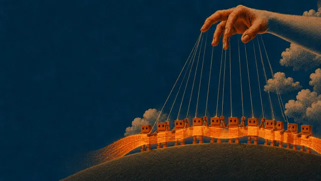
CLoom. Too busy.
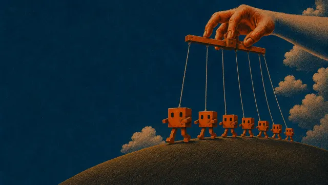
DProcession. Claude's first pick.
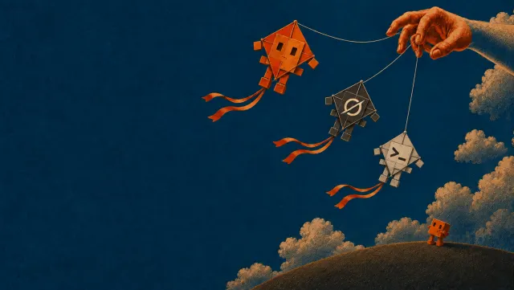
B2Kites get characters: Grok and Codex faces.
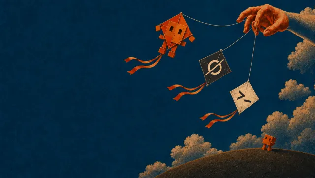
B3Logo diamond kites. Lost to B2.
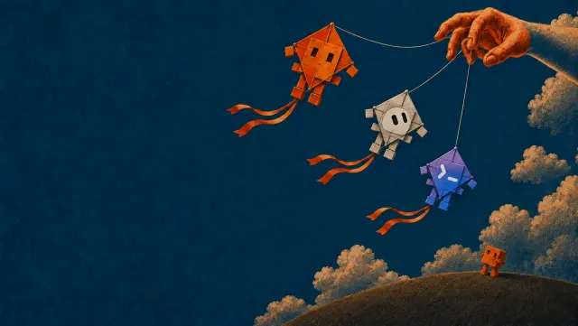
B4Real app icons passed in as reference images.
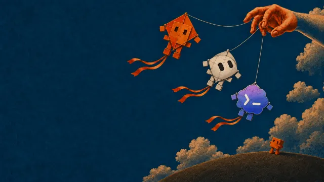
B5Kites shaped like the icons. The winner.
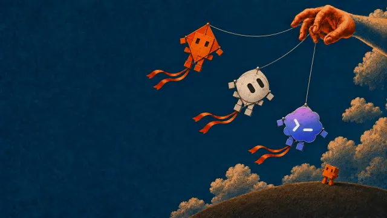
B6Fix pass: tilted Grok eyes, even sizes, more sky between kites.
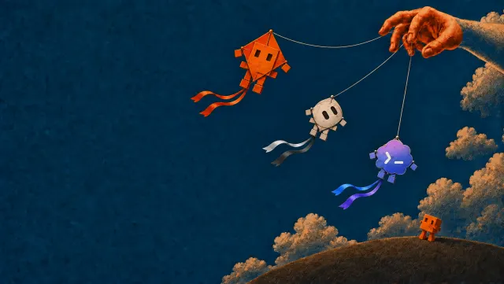
B7Smaller Grok and Codex kites, tails recolored to match.
FinalB7 resized to 1920x1080. This frame went to Seedance.
Claude ranked the procession first. I picked the kites anyway. Make drafts you can react to, then trust your gut over the ranking.
The prompt for the final round
Every edit round used the same shape: keep everything identical, then a numbered list of only the changes. This is B7, verbatim:
Codex · round B7
Generate an image. Edit this image and keep everything identical: style, grain, colors, the hand, strings, clouds, hill, small robot, positions, and the empty left 40 percent. Make only these changes: 1) The orange Claude kite at the top is the size reference. Shrink the silver Grok Bot dome kite (middle) by about 10 percent and the blue-violet Codex cloud kite (bottom) by about 20 percent, so all three kites have the same overall width and height. Keep each kite in the same position, attached to its string. 2) Recolor the ribbon tails to match each kite: the Claude kite keeps its orange tails; the Grok Bot kite gets silver-white and charcoal tails; the Codex kite gets tails in its blue-to-violet gradient. Keep the same ribbon shape, length, and engraved print texture. Landscape 16:9. No text or words. Save the final image to ./B7-final-still.png
The model over-shrank the two kites (they came out 20 to 25% smaller). I kept it. Claude's kite reads as the lead agent now, which fits the metaphor.
Start your own: the first-round template
Round one sent four scenes at once, each with the same style block and a reference image, so every draft lived in the same world. Swap in your scene and your style:
Codex · first-round prompt
Generate an image. [Your scene in two or three sentences.] Match the reference image exactly in style: [your style words]. Landscape 16:9, wider than tall. Keep the left 40 percent of the frame as calm empty sky with no objects, so website headline text can sit there. No text, no logos. Save the final image to ./draft-a.png
What worked in the prompts
Edits only list the changes. "Keep everything identical … Make only these changes: 1) 2) 3)."
Number your reference images. "Image 1 is the scene to edit. Image 2 is the Grok Bot app icon. Image 3 is the Codex app icon."
Pass the real logo as an image. Describing "the Grok logo" got the wrong mark. Claude pulled the actual app icons off my Mac and passed them in, and that fixed it.
"No text or words" in every prompt. Image models love to add a fake headline.
Give moving things room. B6 asked for clear sky around each kite, so they could bob in the video without overlapping.
3. Step two: the video
One still is enough. I asked Claude Code whether I needed extra frames to guide the animation. Its answer set up the loop trick:
Claude Code · Sep 22, 5:18 PM
"You need only one still: the finished kite image. Seedance handles the rest. Use that same still as both the first and last frame, and the clip loops by design."
The prompt
Seedance 2.5 image-to-video: 5 seconds, 720p, no audio, and the same still as the first and the last frame. Here's my exact prompt:
Seedance · hero prompt
Three kites bob gently in a steady breeze, each on its own rhythm. Ribbon tails ripple and flutter. Strings sway slightly. Midway through, the small orange robot on the hill raises one arm, waves up at the kites twice, and lowers its arm back to its starting pose. The hand, clouds, and hill stay completely still. Locked camera, no zoom, no pan.
Same still as the first and last frame. The clip has to end where it started.
Say what moves: kites bob, tails ripple, strings sway, the robot waves.
Say what stays still: the hand, the clouds, the hill.
Lock the camera: "Locked camera, no zoom, no pan."
Why one wave instead of a dance? A wave ends back in the starting pose, so it loops. (And the robot is about 40 pixels tall at 720p, so a dance would be wasted anyway.)
Raw Seedance output, 1280x720, 5.04 seconds. Watch the robot on the right. We'll fix that arm in section 5.
Getting the clip from Higgsfield
Higgsfield has a pay-as-you-go API, separate from the app membership. You don't need to learn it. Go to Higgsfield's API platform (it's separate from the app), make an API key, and add credit. The key is a password that lets Claude Code use your account. Paste it to Claude Code once and ask it to store it safely, then hand it the rest. My first submit came back not_enough_credits (no charge), so I topped up $20. My clip came back in about 5 minutes.
Paste into Claude Code
Use the Higgsfield API to animate ./hero-still.png with Seedance 2.5 image-to-video. Use the Higgsfield key I gave you, keep it saved somewhere safe on my computer, and never show it on screen. First, call the free estimate endpoint and tell me the price before you spend anything. Then upload the still and submit a 5-second, 720p clip with no audio, using the same image as the first and last frame, with this prompt: [your motion prompt]. Poll until it finishes and save the video as ./seedance-raw.mp4.
Gotcha: skip the Higgsfield CLI. It logs in through your browser and spends app-plan credits. My free plan had 10 credits, and this clip cost 35. The API key draws on its own prepaid balance.
Seedance and Kling both work well for this. I used Seedance.
The receipts
Higgsfield's free estimate put a 5-second, 720p clip at $2.31, and that's what it charged. My balance went from $20.00 to $17.69 after the hero and $15.38 after the 404.
Setting
Cost per clip
480p, 5 seconds
$1.03
720p, 5 seconds (what I ran)
$2.31
720p, 8 seconds
$3.70
My reaction at the time: "damn $2.31 isnt nothing." Get the free estimate first, and check the settings and prompt before you pay.
4. The loop trick
Same first and last frame gets you close, but you can still see a small jump.
Claude Code measured the seam by scoring how alike the first and last frames are (1.0 means identical). The raw clip scored 0.902, which shows up as a small jump every 5 seconds.
The fix is a crossfade: blend the last half second into the first half second. The loop gets shorter (5.04 down to 4.58 seconds), and the seam score goes up to 0.959. I can't spot the jump anymore.
Lock what shouldn't move
720p looks soft at full screen. So Claude Code upscaled the clip to 1080p and pasted the sharp still back over everything that should stay still, through a feathered mask: the headline sky on the left, the hill, and the clouds on the right. Only the kites come from the video, and the headline area never shimmers.
The sharp still.The mask. White uses the still, black uses the video.
You won't do either fix by hand. The build prompt in section 6 tells Claude Code to check the seam and lock the still parts for you.
5. The robot-arm fix
Seedance mangled the robot's arm. In the still, the arm is a tiny nub, so the model had to invent one, and it invented a big one.
Me · Sep 22, 8:37 PM
"the issue is the robots hand got distorted and its too big. probably because the image in the picture doesnt show the robots hand so seedance has to make it up. how can we work on this without spending more API calls and money"
Seedance rawClaude Code fix
I described the problem (my message above) and asked for a fix that cost nothing extra. Claude Code did all of this in about 6 minutes, for $0:
Freeze the robot. Paste the robot from the still over every frame through a feathered box mask. Now it can't distort.
Draw the wave. Crop the robot out of the still, scale it up 4x, and have Codex draw three arm poses: half raised, straight up, and tilted out.
Cut out each pose. A color mask (saturated orange counts as robot), a feathered edge, and the patch goes back at the robot's exact spot.
Flip through the poses at about 6 per second, between 1.5 and 3.5 seconds: half, up, tilt, up, tilt, up, half, rest.
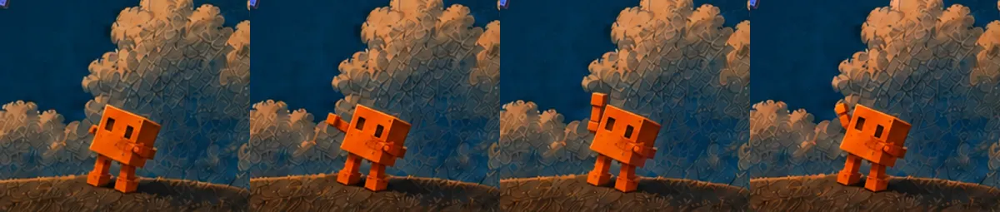
It moves in steps, like stop-motion. For a blocky toy robot, that's the right look. The pose prompts all shared this prefix:
Codex · pose edit
Generate an image. Edit this image. It is a close crop of a small orange blocky cube robot standing on a dark hill in front of engraved clouds. Keep everything identical: the exact same framing, background, clouds, hill, lighting, print texture, robot body position, size, legs, and face. Change only the robot's arm on the left side of the image. The arm stays small and blocky, the same thickness as the robot's legs, made of two short orange blocks. Do not make it long or add a hand; the end of the arm is a plain square block. Output the same aspect ratio as the input.
Pose: the arm is raised straight up above the robot's head, waving at the sky.
Anything you want animated has to be clearly visible in the still.
6. Step three: the build
Hand the clip to Claude Code. Here's what I actually said:
Me in Claude Code · Sep 22, 8:47 PM
"I'm super happy with this. now lets package it up for a hero image on a website, with text to populate after a short delay, like a nice appear effect. and then move into the rest of the website."
That was enough because my session already had all the context. You're starting fresh, so paste this instead. It's everything my session ended up doing, in one prompt. You don't need to understand a word of it. It's written for Claude Code, so paste it as-is:
Paste into Claude Code
I have a 5-second looping video (clip.mp4) and the still image it was made from (still.png). Build a hero section for my homepage with the clip playing behind the page.
1. Loop: compare the first and last frames with ffmpeg SSIM. If there's a visible jump, crossfade the last 0.5 seconds into the first 0.5 seconds with xfade.
2. Sharpness: upscale to 1080p and overlay the sharp still through a feathered mask on every region that shouldn't move, especially the empty side where the headline goes. Only the moving parts should come from the video.
3. Compress with ffmpeg, no audio, +faststart: a 1080p H.264 mp4 and a VP9 webm for desktop, a 720p mp4 for phones. Aim for under 700 KB each.
4. Poster: export the first frame as a webp at 1920 and 960 wide. Use it as a real <img> with srcset behind the video, and preload it with fetchpriority="high".
5. Video tag: autoplay muted loop playsinline. Pause it when it scrolls off screen or the tab is hidden.
6. Text: put the headline and buttons in the empty side of the art with a soft dark gradient behind them. After 1.2 seconds, reveal each line in turn: rise 14px, fade in, and un-blur from 6px over 0.9s, 160ms apart. Start them at opacity .01, not 0, so PageSpeed still finds an LCP element.
7. Reduced motion: if the visitor prefers reduced motion, hide the video, show the poster, and show the text without animating it.
8. Phones: give the art its own band at the top and put the copy below it on a solid background.
9. Check your work: serve it locally, screenshot it at 1440 and 390 wide with headless Chrome, look at the screenshots, and fix anything off before you show me.
No site yet? Ask Claude Code to build the whole homepage around the hero. Already on a site builder? Give Claude Code the finished files and ask how to add a background video on your platform.
The 1.2-second delay gives the kites a moment alone before the words show up.
The finished hero is small. A desktop visitor loads about 380 KB for the whole moving hero, and a phone loads about 310 KB. The raw Seedance clip was 1.9 MB.
7. The 404
This one's my favorite. Hit a broken link on my site and you land in a field where a giant kite crashed long ago. The camera pushes through the flowers toward it, then drifts back.
The 404 loop, 10 seconds: 5 forward, 5 in reverse.
The idea came from @DesignByMoein's post (it's in section 10). Here's what I told Claude Code after showing it the post:
Me · Sep 24, 9:57 PM
"See how much more lively and extravagent the scenary is than our hero image? I would like to go that route"
So I dropped the print style for a bright 3D-film look and kept only the robot. A 404 has barely any text, so I could pack a lot more into the scene. It still keeps the upper-left third calm for the big "404."
The image
Codex · 404 image
Use your built-in image generation tool to create ONE image and save it as ./fallen-kite-404-v1.png in this folder. Do not write code; just generate and save the image.
The attached image is ONLY a reference for the character: the small orange cube robot standing on the hill (blocky body, simple face, short legs). Keep that robot design, but render it in the new style below. Do not copy anything else from the attached image.
Scene (wide cinematic 16:9 landscape, very detailed, vivid, lively):
A giant diamond-shaped kite that crashed here long ago lies tilted in a lush green meadow at warm golden hour. It is enormous, as big as a house, its fabric faded and patched, its wooden spars weathered, overgrown with climbing vines, moss, and wildflowers. Its long ribbon tail, also overgrown, winds away across the rolling hills into the distance. The small orange cube robot stands in the grass in front of it, tiny by comparison, looking up at it.
Style: stylized high-detail 3D animated-film look, rich saturated color, bright blue sky with huge sculpted white cumulus clouds, soft distant blue mountains, a few birds. The foreground is packed with tall grass and red, orange, pink, and white wildflowers, strongly out of focus (shallow depth of field), framing the bottom of the image. Sharp focus on the kite and robot in the middle distance. Joyful, adventurous, peaceful.
Composition: place the kite and robot in the right 60% of the frame. Keep the upper-left third calmer (sky, clouds, distant hills) so large text can sit there later. No text, letters, logos, or watermarks anywhere in the image.
v1
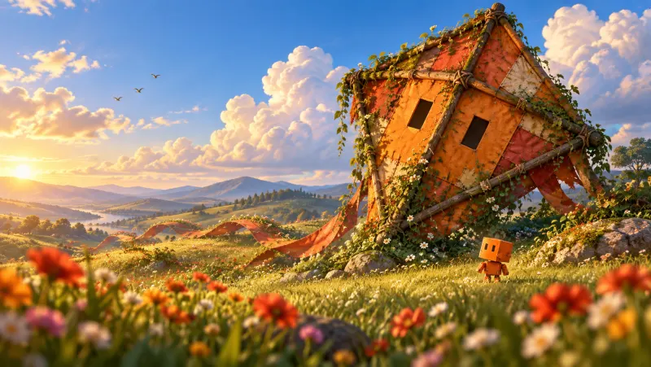
Two dark squares on the kite. It read as a house, or a face.v2
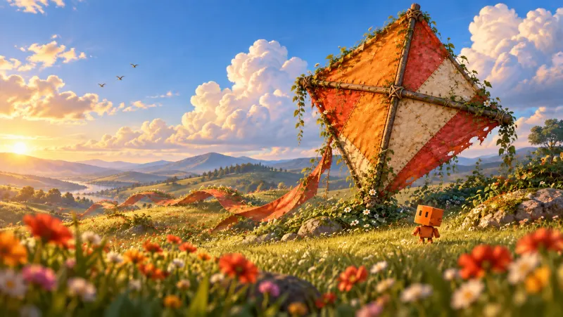
One edit: "Change only the giant kite so it clearly reads as a kite."
The blurry flowers in the foreground are on purpose. They give the camera something to move through, and the blur hides 720p softness.
The video: a camera move with no end frame
The hero locks the camera. The 404 moves it. A dolly shot can't end where it started, so this one sends a first frame only, with no last frame. Same 5 seconds, 720p, no audio, and another $2.31.
Seedance · 404 prompt
Slow cinematic dolly forward and slightly to the right, low to the ground, gliding through the out-of-focus wildflowers in the foreground toward the giant fallen kite and the small orange robot. Parallax: foreground flowers pass by faster than the kite and hills. Gentle breeze: grass and flowers sway softly, the kite's ribbon tail lifts slightly, two birds drift across the sky. The kite, the robot, and the landscape stay in place; only the camera moves. Warm golden-hour light, smooth and steady, no cuts.
The ping-pong loop
Have Claude Code play it forward, then backward. That gives you 10 seconds with no seam.
Shipped sizes: 2.2 MB for the webm, 2.8 MB for the mp4. Only lost visitors ever load it.
Make it a real 404
A good-looking 404 page still has to return the right status code, or search engines index your error page as a real one. Ask Claude Code to show this page for every broken link and tell Google it's an error page, then test it with a made-up link. On my site it was a one-line fix.
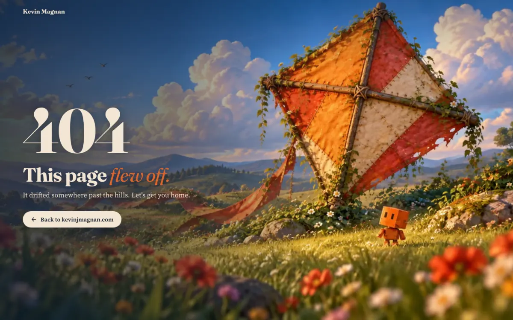
The copy came from Claude: "404. This page flew off. Let's get you home."
8. Free option vs best option
Free
Claude Code + CSS · $0
Skip the video. Have Claude Code animate your text and a few page elements in CSS. It looks really good, and I've done it on a few other sites.
Best
Image + Seedance + Claude Code · about $2.30
Codex for the still, Seedance for the motion, and Claude Code for the loop, the fixes, the compression, and the page. Everything in sections 2 through 6.
For the free route, start with this:
Paste into Claude Code
Animate my homepage hero with CSS only, no video. After a short delay, reveal the headline, tagline, and buttons one line at a time: each rises, fades in, and un-blurs, about 160ms apart. Add slow, subtle motion to one or two background elements. Turn every animation off for visitors who prefer reduced motion. Then screenshot it at 1440 and 390 wide and fix anything that looks off.
9. Gotchas
Video models invent what they can't see. If a body part is hidden in the still, the model makes one up. Show it clearly, or plan to patch it like the robot arm.
Same first and last frame still leaves a small jump. A 0.5-second crossfade hides it.
720p is soft at full screen. Lock everything that doesn't move to the sharp still.
Camera moves can't use an end frame. Send the first frame only and ping-pong the clip.
The Higgsfield CLI and API bill separately. The CLI spends app credits, and the API key spends a prepaid balance. Check the free estimate before you pay.
Image models over-correct sizes. "Shrink by about 10%" came out closer to 20%. Ask for less than you want.
Describing a logo gets you the wrong logo. Pass the real icon as a numbered reference image.
Phones crop the art. On a phone, my robot and most of the hand fall outside the frame, so the wave only shows on desktop. A proper phone version needs a vertical crop and one more paid run. I haven't done it.
Text that starts fully invisible can tank your Google speed score. The build prompt already handles it. My phone score went from 67 to 89.
10. Where this came from
I'd been saving sites like these on X for months before I built mine. These are the posts that pushed me to finally do it. Go follow these people.
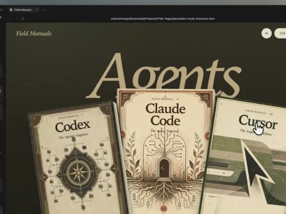
@MengToJul 29, 2026
"I keep seeing the same pattern with Three.js games, shaders, p5.js, and now 3D UI. Give a coding agent a strong reference, the live URL, and the source repo. It can study the mechanics, recreate them, and give you a working place to experiment."
"I open-sourced the Kage landing page and the three.js skills behind it. … For a site where every section scrolls through a 3D world, that's surprisingly good."
"I'm blown away by the quality of the landing pages that Opus 5 can create in Three.js. Prompting it with "orbit using mouse" is enough to create a 3D parallax effect."
"my personal website updates itself every time i go somewhere. i text my Grok Bot a photo of the place. it turns it into a 3D clay diorama, makes day + night versions, and pushes it live to my homepage in 2 minutes."
Leave the empty space, lock the camera, and let Claude Code do the fiddly parts. Then send me what you build.
Kevin
Want the next one?
Join the list and I'll send you my free kit, Don't Start From Zero: the GitHub repos, skills, and plugins I actually use. New guides like this one land in the same inbox.
Unsubscribe anytime.
Built something with this?
Show me. Tag me on TikTok, where I post what I'm building.